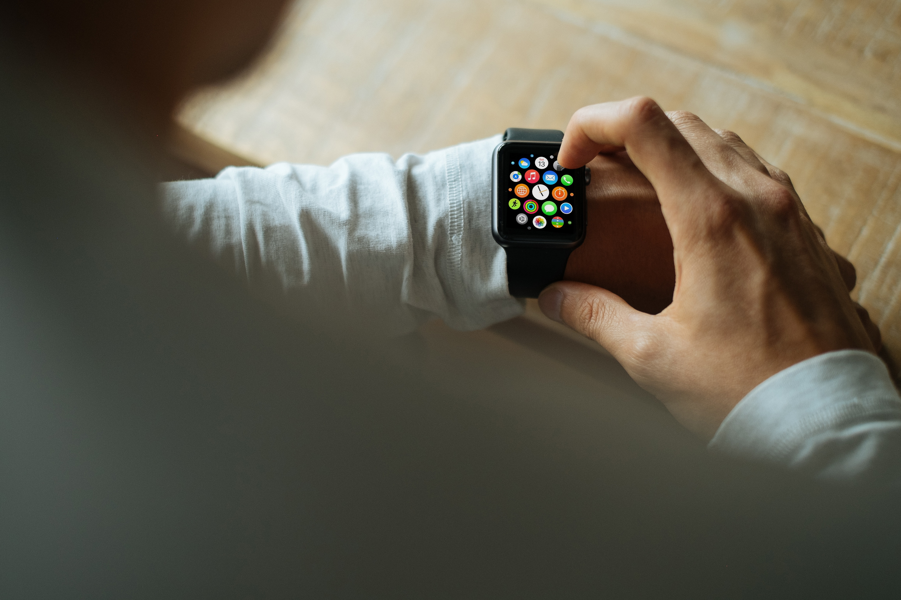

The Continuous Authentication of Mobile Users through Co-Authentication
Brandon Corn, Columbus State University, GA
Co-Author(s): Ashley Ruiz, Universidad Ana G. Mendez, Recinto de Gurabo, PR
With the proliferation of mobile devices in fields such as m-Health and human-centered monitoring systems, the continuous authentication of users have become an important issue. A continuous user authentication method is a security mechanism that monitors user’s actions at a high frequency (in time) and determines that a user is a legitimate/authorized one. These authentication mechanisms must guarantee user identity with high assurance (non-repudiation), authenticate users without explicit user intervention (unobtrusiveness) and be power-aware (this constraint is important if the authentication method use battery-powered wearable devices). We present in this poster a power consumption evaluation of Collaborative Authentication (Co-Authentication) as a continuous authentication method. Co-Authentication is a single-factor authentication technique in which multiple registered devices work together to authenticate a user, which minimizes the obtrusiveness while providing high user authentication assurance. We performed experiments using two Bluetooth compatible mobile devices and a stand-alone server connected to a local area network and running Co-Authentication continuously for eight hours to evaluate its power consumption in the mobile devices. We found that the protocol uses approximately between 1.19% and 4.0% of the total power used by the devices. These results give evidence of the feasibility of using Co-Authentication as a continuous authentication method. Future research will explore executing the protocol continuously as a background process, on different brands of mobile devices, and while connected to cellular networks.
References: Jay Ligatti, Cagri Cetin, Shamaria Engram, Jean-Baptiste Subils, Dmitry Goldgof. Proceedings of the ACM Symposium on Applied Computing (SAC), April, 2019.
Brandon Corn, Columbus State University, GA
Co-Author(s): Ashley Ruiz, Universidad Ana G. Mendez, Recinto de Gurabo, PR
With the proliferation of mobile devices in fields such as m-Health and human-centered monitoring systems, the continuous authentication of users have become an important issue. A continuous user authentication method is a security mechanism that monitors user’s actions at a high frequency (in time) and determines that a user is a legitimate/authorized one. These authentication mechanisms must guarantee user identity with high assurance (non-repudiation), authenticate users without explicit user intervention (unobtrusiveness) and be power-aware (this constraint is important if the authentication method use battery-powered wearable devices). We present in this poster a power consumption evaluation of Collaborative Authentication (Co-Authentication) as a continuous authentication method. Co-Authentication is a single-factor authentication technique in which multiple registered devices work together to authenticate a user, which minimizes the obtrusiveness while providing high user authentication assurance. We performed experiments using two Bluetooth compatible mobile devices and a stand-alone server connected to a local area network and running Co-Authentication continuously for eight hours to evaluate its power consumption in the mobile devices. We found that the protocol uses approximately between 1.19% and 4.0% of the total power used by the devices. These results give evidence of the feasibility of using Co-Authentication as a continuous authentication method. Future research will explore executing the protocol continuously as a background process, on different brands of mobile devices, and while connected to cellular networks.
References: Jay Ligatti, Cagri Cetin, Shamaria Engram, Jean-Baptiste Subils, Dmitry Goldgof. Proceedings of the ACM Symposium on Applied Computing (SAC), April, 2019.